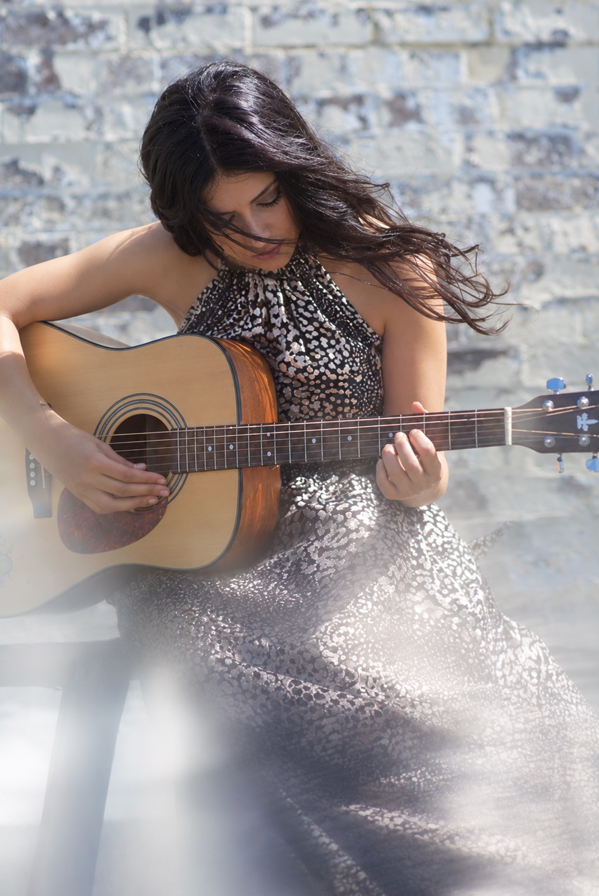
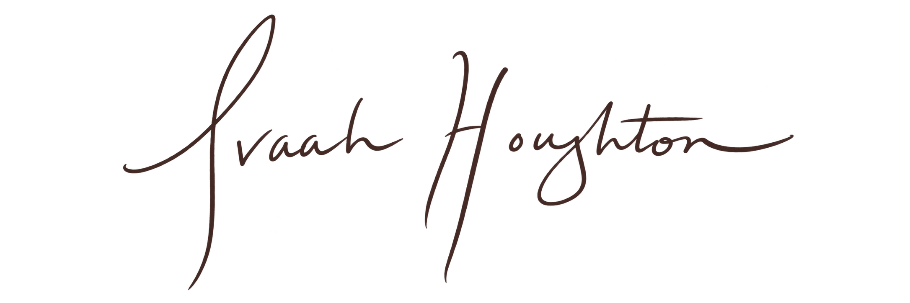

About Ava
Music has always been part of my story.

I've always loved the power of music to uplift, touch hearts and minds, and even to heal and transform.
My love of performing began with a local musical theatre production of Les Misérables, followed by the opportunity to play Maria in West Side Story the following year. These early experiences showed me how music could evoke emotion, tell stories and inspire us to explore our creative potential.
I went on to study theatre at university, where I auditioned for the vocal elective and began training with an opera singer. This led me to the Wollongong Conservatorium of Music, where I continued my classical vocal training under the guidance of another opera singer. Throughout my studies, I had many opportunities to perform and develop my craft on stage.
I later completed a Master of Teaching (Primary) and spent around ten years working in education, often seeking opportunities to bring creativity into the classroom. While teaching became a significant part of my professional life, my love of music and the arts remained. More recently, I've had the opportunity to devote more time to singing, performing and sharing music with others.
What I love about performing and teaching is the opportunity to share music in ways that support and uplift others. Sometimes that's through singing at a wedding or special gathering, and other times it's through helping someone grow in confidence, develop their singing skills and find joy in self-expression.
My love of the arts extends beyond music to theatre, painting, literature and other forms of creative expression. I believe creativity enriches our lives, connects us with others and brings joy, beauty and purpose to our everyday experiences.
Born and raised in Sydney, I've called Queensland home for over ten years and am grateful to live on the beautiful Sunshine Coast. Outside of music, I enjoy spending time in nature, going for walks, birdwatching, painting and exploring new hobbies.

Explore
I'd love to hear from you.
Whether you're planning a special occasion or interested in singing lessons, you're welcome to get in touch.